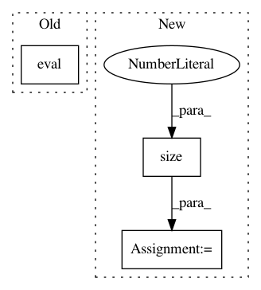

3136b84e522b4a2dfaf71810ebbecf03bf24066c,test/nn/conv/test_graph_conv.py,,test_graph_conv,#,5
Before Change
jitconv.load_state_dict(conv.state_dict())
jittedconv = torch.jit.script(jitconv)
conv.eval()
jitconv.eval()
jittedconv.eval()
assert (torch.abs(conv(x, edge_index) -
jitconv(x, edge_index)) < 1e-6).all().item()
assert (torch.abs(conv(x, edge_index) -
After Change
def test_graph_conv():
in_channels, out_channels = (16, 32)
edge_index = torch.tensor([[0, 0, 0, 1, 2, 3], [1, 2, 3, 0, 0, 0]])
edge_weight = torch.randn(edge_index.size(1))
num_nodes = edge_index.max().item() + 1
x = torch.randn((num_nodes, in_channels))
conv = GraphConv(in_channels, out_channels)
assert conv.__repr__() == "GraphConv(16, 32)"
out1 = conv(x, edge_index)
assert out1.size() == (num_nodes, out_channels)
out2 = conv(x, edge_index, edge_weight)
assert out2.size() == (num_nodes, out_channels)
jit_conv = conv.jittable(x=x, edge_index=edge_index)
jit_conv = torch.jit.script(jit_conv)
In pattern: SUPERPATTERN
Frequency: 3
Non-data size: 3
Instances
Project Name: rusty1s/pytorch_geometric
Commit Name: 3136b84e522b4a2dfaf71810ebbecf03bf24066c
Time: 2020-06-08
Author: matthias.fey@tu-dortmund.de
File Name: test/nn/conv/test_graph_conv.py
Class Name:
Method Name: test_graph_conv
Project Name: rusty1s/pytorch_geometric
Commit Name: f8449d8979d825d7b902bed171df80a80872e7a5
Time: 2020-06-08
Author: matthias.fey@tu-dortmund.de
File Name: test/nn/conv/test_appnp.py
Class Name:
Method Name: test_appnp
Project Name: cornellius-gp/gpytorch
Commit Name: c63cc933782e2de32c9fe74c18b337b2bbe0f242
Time: 2018-07-19
Author: jrg365@cornell.edu
File Name: test/examples/test_kissgp_variational_regression.py
Class Name: TestKissGPVariationalRegression
Method Name: test_kissgp_gp_mean_abs_error